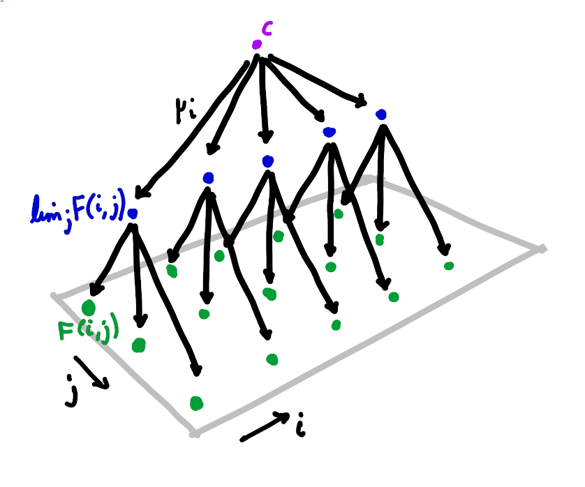
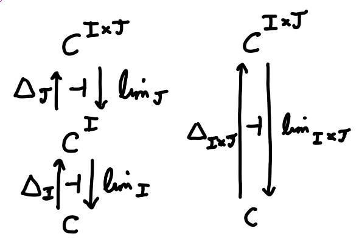

A very useful fact in category theory is that limits commute with limits (and dually colimits commute with colimits). That is, given a functor \(F : I \times J \to C\) we have \[\lim_i \lim_j F(i, j) \cong \lim_j \lim_i F(i, j)\] under appropriate conditions.
In this post I will explain the precise statement of this theorem, and describe three proofs. The first proof directly uses universal properties. The second is a standard argument using the Yoneda embedding to reduce to the case of \(\text{Set}\), which we will see is really the same proof in disguise. The third proof is an elegant argument using uniqueness of adjoints.
The theorem is often stated under the condition that \(C\) has all \(I\)-shaped limits and all \(J\)-shaped limits. However it is true under weaker conditions. We have
Theorem (Limits commute with limits)
Let \(F : I \times J \to C\) be a functor. If \(\lim_j F(i, j)\) exists for all \(i \in I\) then we find that \(\lim_i \lim_j F(i, j)\) exists iff \(\lim_{(i, j)} F(i, j)\) exists, in which case they are canonically isomorphic.
In particular \[\lim_i \lim_j F(i, j) \cong \lim_j \lim_i F(i, j)\] if both sides exist.
I should briefly clarify what \(\lim_i \lim_j F(i, j)\) actually means. A morphism \(f : i \to i'\) induces a natural transformation \(F(i, {-}) \Rightarrow F(i', {-})\), which induces a morphism \(\lim_j F(f, j) : \lim_j F(i, j) \to \lim_j F(i', j)\). So the limits \(\lim_j F(i, j)\) in fact assemble into a functor \(I \to C\), and \(\lim_i \lim_j F(i, j)\) is the limit of this functor.
Warmup: proof in \(\text{Set}\)
Limits in \(\text{Set}\) are particularly easy to handle. If \(H : I \to \text{Set}\) is a diagram in \(\text{Set}\) then we have \[\lim_i H(i) = \Big\{\{x_i\} \in \prod_i H(i) \Big\vert H(f)(x_i) = x_{i'} \text{ for all $f : i \to i'$ in $I$}\Big\}\] Note the RHS is isomorphic to the set of cones over \(H\) with summit the singleton set \(1\) (since \(\lim_i H(i) \cong \text{Set}(1, \lim_i H(i)) \cong \text{Cone}(1, H)\) by the universal property of the limit).
This allows us to quite straightforwardly prove the theorem in the special case of a \(\text{Set}\)-valued functor. Since \(\text{Set}\) is complete all the limits exist — we just need to prove the claimed isomorphism.
Let \(F : I \times J \to \text{Set}\) a functor. Then by the formula for limits in \(\text{Set}\), for each \(i \in I\) we have \[\lim_j F(i, j) = \Big\{\{x_j\} \in \prod_j F(i, j) \Big\vert F(i, g)(x_j) = x_{j'} \text{ for all $g : j \to j'$ in $J$}\Big\}\text{.}\] Moreover given \(f : i \to i'\) in \(I\) we have an induced map \(\lim_j F(f, j) : \lim_j F(i, j) \to \lim_j F(i', j)\) given by \(\{x_j\} \mapsto \{F(f, j)(x_j)\}\). So we find \[\begin{align*} \lim_i \lim_j F(i, j) &= \Big\{\{y_i\} \in \prod_i \lim_j F(i, j) \Big\vert (\lim_j F(f, j))(y_i) = y_{i'}\\ &\quad\quad\text{ for all $f : i \to i'$ in $I$}\Big\}\\ &\cong \Big\{\{x_{i, j}\} \in \prod_i \prod_j F(i, j) \Big\vert F(i, g)(x_{i, j}) = x_{i, j'} \text{ for all $g : j \to j'$ in $J$, }\\&\quad\quad F(f, j)(x_{i, j}) = x_{i', j} \text{ for all $f : i \to i'$ in $I$}\Big\}\\ &\cong \Big\{\{x_{i, j}\} \in \prod_{(i, j)} F(i, j) \Big\vert F(f, g)(x_{i, j}) = x_{i', j'}\\ &\quad\quad\text{ for all $(f, g) : (i, j) \to (i', j')$ in $I \times J$}\Big\}\\ &= \lim_{(i, j)} F(i, j)\\ \end{align*}\] as desired.
General proof by universal properties
Now we move to the general case. Let \(F : I \times J \to C\) a functor, and suppose \(\lim_j F(i, j)\) exists for every \(i \in I\). Then I claim that the universal property of \(\lim_i \lim_j F(i, j)\) is the same as the universal property of \(\lim_{(i, j)} F(i, j)\), and so one exists iff the other does, in which case they are isomorphic.
I should be a bit careful here. The universal property of the limit is really the universal property of a limit cone, and a cone over \(\lim_j F({-}, j)\) is not the same thing as a cone over \(F({-}, {-})\). What I really mean is that there is an isomorphism between the category of cones over \(\lim_j F({-}, j)\) and the category of cones over \(F({-}, {-})\), which in particular preserves the summits of the cones.

A cone over \(\lim_j F({-}, j)\) with summit \(c\) is a family of morphisms \(\mu_i : c \to \lim_j F(i, j)\) such that for any \(f : i \to i'\) in \(I\), \[\lim_j F(f, j) \circ \mu_i = \mu_{i'}\text{.}\] By the universal property of the limit, a morphism \(c \to \lim_j F(i, j)\) corresponds to a cone over \(F(i, {-})\). Hence the morphism \(\mu_i\) corresponds to a family of morphisms \(\lambda_{i, j} : c \to F(i, j)\) such that for any \(g : j \to j'\) in \(J\), \(F(i, g) \circ \lambda_{i, j} = \lambda_{i, j'}\). Moreover given \(f : i \to i'\), \(\lim_j F(f, j) \circ \mu_i\) is a morphism \(c \to \lim_j F(i', j)\) corresponding to the cone over \(F(i', {-})\) with \(j\)-component given by \(F(f, j) \circ \lambda_{i, j}\). Hence a cone over \(\lim_j F({-}, j)\) corresponds to a family of morphisms \(\lambda_{i, j} : c \to F(i, j)\) such that for any \(g : j \to j'\) in \(J\), \(F(i, g) \circ \lambda_{i, j} = \lambda_{i, j'}\), and also for any \(f : i \to i'\) in \(I\), \(F(f, j) \circ \lambda_{i, j} = \lambda_{i', j}\).
But that is the same as a family \(\lambda_{i, j}\) such that for any morphism \((f, g) : (i, j) \to (i', j')\) in \(I \times J\), \(F(f, g) \circ \lambda_{i, j} = \lambda_{i', j'}\), which is precisely the definition of a cone over \(F({-}, {-})\).
Moreover it is straightforward to check that a morphism \(h : c \to c'\) gives a morphism between two cones over \(\lim_j F({-}, j)\) with summits \(c\) and \(c'\) iff it gives a morphism between the corresponding cones over \(F({-}, {-})\).
This establishes the isomorphism between categories of cones. Since a limit is just a terminal cone, we see that \(\lim_i \lim_j F(i, j)\) exists iff \(\lim_{(i, j)} F(i, j)\) exists, in which case the limits are isomorphic.
General proof by Yoneda
If you look back at the previous two sections, you might notice that the arguments are very similar. There is a standard way to formalise this idea, using the Yoneda lemma and the proof in \(\text{Set}\) to prove the general case.
The key fact that we need is that the Yoneda embedding \(y : C \to \text{Set}^{C^\text{op}}\) preserves limits (by the universal property of limits) and reflects limits (since it is full and faithful). So if \(G : I \to C\) is a diagram in \(C\) then \(\lim_i G(i)\) exists iff \(\lim_i C({-}, G(i)) \cong C({-}, c)\) for some \(c \in C\), in which case \(c \cong \lim_i G(i)\).
So as before let \(F : I \times J \to C\) be a functor, and suppose \(\lim_j F(i, j)\) exists for every \(i \in I\). Applying the Yoneda embedding, we know that \[C({-}, \lim_j F(i, j)) \cong \lim_j C({-}, F(i, j)) \text{.}\] Now \(\lim_i \lim_j F(i, j)\) exists and is isomorphic to \(c \in C\) iff there is a natural isomorphism \[\begin{align*}C({-}, c) &\cong \lim_i C({-}, \lim_j F(i, j))\\ &\cong \lim_i \lim_j C({-}, F(i, j)) \text{.} \end{align*}\] But we know from the proof in \(\text{Set}\) that \[\lim_i \lim_j C(c', F(i, j)) \cong \lim_{(i, j)} C(c', F(i, j))\] for any \(c' \in C\). Moreover it is straightforward to check that this isomorphism is natural in \(c'\). So we find that \[\lim_i \lim_j C({-}, F(i, j)) \cong \lim_{(i, j)} C({-}, F(i, j)) \text{.}\] Now also \(\lim_{(i, j)} F(i, j)\) exists and is isomorphic to \(c \in C\) iff there exists a natural isomorphism \[C({-}, c) \cong \lim_{(i, j)} C({-}, F(i, j)) \text{.}\] So chaining all these isomorphisms together we deduce that \(\lim_i \lim_j F(i, j)\) exists iff \(\lim_{(i, j)} F(i, j)\) exists, in which case they are isomorphic.
If you look carefully, you can convince yourself that this is amounts to almost exactly the same proof as the proof in the last section. In particular given a functor \(H : I \to \text{Set}\), the formula for limits in \(\text{Set}\) shows us that an element of \(\lim_i C(c, H(i))\) corresponds to a cone over \(H({-})\) with summit \(c\), so the work we did proving the theorem for \(\text{Set}\) corresponds precisely to the work we did showing that a cone with summit \(c\) over \(\lim_j F({-}, j)\) corresponds to a cone with summit \(c\) over \(F({-}, {-})\).
A distinct proof using uniqueness of adjoints
In the special case where \(C\) is complete, there is a very elegant proof. Let \(\Delta_I c : I \to C\) denote the “constant value” functor which takes every object in \(I\) to \(c\), and every morphism in \(I\) to \(1_c\). This construction extends to a functor \(\Delta_I : C \to C^I\). Let \(\lim_I : C^I \to C\) be the functor which takes a functor \(H : I \to C\) to a choice of limit \(\lim_i H(i)\). Then the universal property of the limit says that \(\Delta_I\) is left adjoint to \(\lim_I\).
Now we generalise this to limits in two variables. We have a functor \(\lim_J : C^{I \times J} \to C^I\) which takes a functor \(F : I \times J \to C\) to the functor \(\lim_j F({-}, j) : I \to C\), and a functor \(\lim_I : C^I \to C\) as above. Then \(\lim_I \lim_J : C^{I \times J} \to C\) takes \(F : I \times J \to C\) to \(\lim_i \lim_j F(i, j)\). We also have a functor \(\lim_{I \times J} : C^{I \times J} \to C\) which takes \(F\) to \(\lim_{(i, j)} F(i, j)\). Our aim is to show that \(\lim_I \lim_J\) is naturally isomorphic to \(\lim_{I \times J}\).

Define \(\Delta_J : C^I \to C^{I \times J}\) and \(\Delta_{I \times J} : C \to C^{I \times J}\) analagously to \(\Delta_I\). Then we have adjunctions \(\Delta_I \dashv \lim_I\), \(\Delta_J \dashv \lim_J\) and \(\Delta_{I \times J} \dashv \lim_{I \times J}\). We can compose the first two adjunctions to get an adjunction \(\Delta_J \Delta_I \dashv \lim_I \lim_J\). But \(\Delta_J \Delta_I\) takes an object \(c \in C\) to the functor \(I \times J \to C\) with constant value \(c\) — that is, \(\Delta_J \Delta_I = \Delta_{I \times J}\). So by uniqueness of adjoints we get a natural isomorphism \(\lim_I \lim_J \cong \lim_{I \times J}\).
That’s all well and good if \(C\) is complete. What if \(C\) is not complete? Then the Yoneda lemma comes to the rescue again. \(\text{Set}^{C^\text{op}}\) is complete, so given our usual setup (\(F : I \times J \to C\) such that \(\lim_j F(i, j)\) exists for every \(i \in I\)) we find that \[\lim_i \lim_j C({-}, F(i, j)) \cong \lim_{(i, j)} C({-}, F(i, j)) \text{.}\] So as before we have that \(\lim_i \lim_j F(i, j)\) exists and equals \(c \in C\) iff \(\lim_i \lim_j C({-}, F(i, j)) \cong C({-}, c)\) iff \(\lim_{(i, j)} C({-}, F(i, j)) \cong C({-}, c)\) iff \(\lim_{(i, j)} F(i, j)\) exists and equals \(c\), proving the theorem.